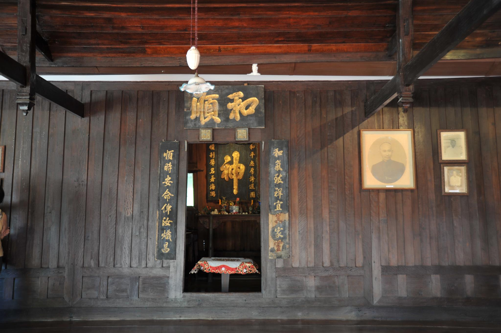

บ้านเก่านอกกรุงวันนี้อยู่ไม่ไกลจากกรุงเทพมหานคร จากด่านทางด่วนบางนาหากวิ่งมาบนบูรพาวิถีก็ใช้เวลาเพียงแค่ไม่เกินสี่สิบนาทีเท่านั้น...บ้านหลังนั้นคือบ้านเลขที่ 362 ง สะพานหัวค่ายหรือปัจจุบันคือซอยกลป้อมค่าย จังหวัดชลบุรี คนรุ่นหลังๆ อาจเรียกว่าบ้านหลวงอำนาจจีนนิกร หากคนที่มีอายุสามสิบปีขึ้นไปจะเรียกกันว่า บ้านคุณยายหยี่
เมื่อพูดถึงเรื่องบ้านเลขที่ หลายคนคงประหลาดใจเมื่อเห็นว่ามีตัวอักษร 'ง งู' ต่อท้ายตัวเลขระบุเลขบ้าน ตัวอักษรที่ต่อท้ายตัวเลขนี้มีมาแต่เดิม เป็นตัวอักษรที่กำกับไว้เพื่อให้รู้ว่า เป็นบ้านเลขที่ที่อยู่สะพานไหน (ปัจจุบันนี้ก็คือซอยใด) ตัวอักษรนี้มีมาก่อนที่บรรดาสะพานต่าง ๆ จะเปลี่ยนเป็นชื่อซอยอย่างเป็นทางการ
ชื่อซอยเพราะพริ้งคล้องจองกันรวมทั้งสิ้น 34 ซอย ที่นายจำนงค์ จันทถิระ นายกเทศมนตรีเมืองชลบุรี (พ.ศ.2483-พ.ศ.2487) ตั้งไว้แทนชื่อเรียกสะพานนั้น ดิฉันได้บันทึกไว้ครบถ้วนแล้วในนวนิยายเรื่อง 'ในวารวัน'
ดังนั้น ตัวอักษร ง งู ที่ต่อท้ายเลขที่บ้านก็หมายความว่า เป็นบ้านเลขที่ที่อยู่ในซอยกลป้อมค่ายนั่นเอง เช่นเดียวกับถ้าเป็นซอยคูกำพล เลขบ้านทุกบ้านก็จะมีตัวอักษร ค ควาย ต่อท้าย ถ้าเป็นซอยบ่ายพลนำก็จะมีตัวอักษร จ จานต่อท้าย เป็นต้น


จากปากคำของคนรุ่นเก่า ๆ ได้ความว่าแต่เดิมคุณหลวงอำนาจจีนนิกร (ฮั้ว) อยู่กินกับภรรยาคนแรกของท่านคือคุณอิ่ม บุตรสาวคนเล็กของขุนพิพัฒน์กับคุณปรางที่บ้านสะพานจีนหรือซอยสำราญราษฎร์ในปัจจุบัน จนกระทั่งคุณอิ่มถึงแก่กรรม ท่านจึงได้สมรสใหม่กับอำแดงพริ้งแล้วยกบ้านเดิมให้แม่อั้วซึ่งเป็นลูกสาวคนเดียวของคุณอิ่ม แล้วข้ามจากสะพานจีนมาปลูกสร้างบ้านหลังใหม่หลังนี้ขึ้นที่สะพานหัวค่ายหรือซอยกลป้อมค่ายเพื่ออยู่กับแม่พริ้งเอกภรรยาคนใหม่ของท่าน
เมื่อเป็นดังนี้ดิฉันจึงคาดเดาปีที่ปลูกสร้างบ้านหลังนี้ขึ้นมาเองจากอายุคุณตาของดิฉัน (นายชำนาญหรือเม่งเชี้ยว บุปผเวส) คุณตาเกิดปีจอ พุทธศักราช 2429 แต่ก่อนที่คุณตาจะเกิด หลวงอำนาจกับอำแดงพริ้งมีธิดาด้วยกันแล้ว 3 คนคือ คุณยายพัน คุณยายแซ และคุณยายผิน ดิฉันจึงร่นเวลาจากปีเกิดของคุณตาขึ้นไป 5 ปี เป็นปี พ.ศ.2424...เชื่อว่าบ้านหลังนี้คงปลูกสร้างขึ้นก่อนหน้าปีพ.ศ.2424 อย่างแน่นอน
เวลานั้นบ้านหลังนี้ปลูกสร้างขึ้นที่ด้านทิศใต้ตรงปลายสะพานหัวค่าย กล่าวคือเป็นบ้านหลังสุดท้ายของสะพานแห่งนี้นั่นเอง คุณแม่เล่าว่าแต่ก่อนจะมีถนนดินลงมาจากซอยมุ่งหน้าไปยังทะเลเพียงไม่ถึงร้อยเมตร แล้วถัดจากนั้นก็เป็นสะพาน คือเป็นเสาปักเป็นคู่ ๆ มีรอดไม้วางระหว่างเสา แล้วปูไม้กระดานไว้เป็นทางเดินยาว และเส้นทางนั้นก็จะสิ้นสุดลงที่สะพานเลี้ยวเข้าซุ้มประตูบ้านหลวงอำนาจจีนนิกร
ซุ้มประตูหน้าบ้านหลวงอำนาจจีนนิกร แต่เดิมเป็นซุ้มประตูทรงไทย รั้วทั้งสองด้านที่แผ่ออกไปจากซุ้มประตูเป็นไม้แผ่นเล็ก ๆ ด้านล่างตีทึบ ด้านบนตีสลับสูงต่ำให้โปร่งตา ถ้ายืนอยู่ที่ซุ้มประตูมองออกไปนอกบ้าน เราจะหันหน้าไปทางทิศเหนือซึ่งจะมีเรือประมงราว 8-9 ลำจอดเป็นแถวอยู่อีกฟากหนึ่งของสะพาน
และเมื่อยืนอยู่ในตำแหน่งนั้น ด้านขวามือคือทิศตะวันออกมีเรือนไม้แฝดหลังคาทรงไทย เรียกกันว่าเรือนหลังบน ด้านซ้ายมือมีเรือนแฝดหลังคาทรงไทยเช่นกัน เรียกว่าเรือนหลังล่าง ทั้งสองหลังมีรูปร่างหน้าตาสัดส่วนเหมือนกันทุกประการคือ ตัวเรือนมีห้องสามห้อง ประตูทางเข้าเรือนอยู่ที่ห้องกลาง แล้วมีประตูเปิดแยกออกไปทางซ้ายและขวาสู่ห้องอีกสองห้องคนละด้าน พาไลหน้าเรือนกว้างประมาณ 5-6 แผ่นกระดาน
ฝาบ้าน พื้น ประตูหน้าต่าง ทำจากไม้หลายชนิดด้วยกัน มีทั้งไม้สัก ไม้ตะแบก ไม้เต็ง ไม้ตัน (ตาล) หก และไม้แดง ซึ่งล้วนเป็นไม้เนื้อแข็ง ฝาเรือนเป็นฝาแบบที่เรียกกันว่า ฝาสายบัว ส่วนหน้าจั่วเป็น จั่วใบเรือ และเมื่อแรกสร้างหลังคามุงจาก ด้านหน้าเป็นแผงจากที่ใช้ไม้กระบอก (ไม้ไผ่) ลำโต ๆ ค้ำยันให้ต่อออกมาเป็นชายคาให้ร่มได้ และถ้าหากมีพายุฝนก็สามารถลดแผงนั้นลงมาใช้บังฝนไม่ให้เปียกหน้าพาไลเรือนได้ด้วย
เรือนทั้งสองหันหน้าเข้าหากันมีนอกชานคั่นกลาง ส่วนด้านทิศใต้มีเรือนหลังเล็ก ๆ อีกหนึ่งเรือนและลานกว้างใช้เป็นครัวกับส่วนซักล้าง และด้านทิศตะวันตกของตัวเรือนหลังนี้เองจะมีประตูเปิดออกไป มีสะพานทอดยาวลงไปในทะเลอีกเส้น


สองข้างสะพานด้านหลังนี้เป็นโรงเรือนหลังไม่โตนักใช้งานต่าง ๆ กันคือ มีโรงเตาอยู่ด้านซ้ายมือสำหรับนึ่งปลา เนื่องจากในสมัยโบราณยังไม่มีตู้แช่ ไม่มีห้องเย็น ไม่มีน้ำแข็ง การถนอมอาหารทะเลที่ใช้กันก็คือหากไม่นึ่งก็ต้องทำปลาเค็ม
ส่วนด้านขวามือของสะพานหากเราหันหน้าไปทางทิศตะวันตก มีเรือนสามหลังต่อกันคือโรงสี ยุ้งข้าว และโรงเฝือก...โรงเฝือกนั้นก็คือโรงเรือนเปิดโล่งกว้างใหญ่สำหรับให้คนงานนั่งผูกเฝือกกันนั่นเอง 'เฝือก' ในที่นี้มิใช่เฝือกที่ใช้ทางการแพทย์ไว้ดามกระดูกและข้อ แต่คือเฝือกที่ใช้ในการทำประมง ดิฉันยังได้เคยเห็นมันในห้องเก็บของหลังบ้านก่อนจะผุพังเสื่อมสภาพไป
ลักษณะของมันคือไม้ไผ่ผ่าออกเป็นซี่ ๆ แล้วผูกถักเข้าด้วยกันด้วยหวายให้กลายเป็นผืน ถ้าผืนสั้น ๆ เขาก็จะใช้ไม้เนื้อแข็งเสียบสองข้าง โผล่ออกมาเป็นด้ามจับหัวท้ายนิดหนึ่งเอาไว้ตากปลาทำปลาแห้ง และหากผูกกันเป็นผืนยาว เขาก็จะเอาไว้ล้อมตัวโป๊ะ ดักจับปลาที่กลางทะเลตรงด้านล่างสุดที่เรียกกันว่าตีนโป๊ะ เพื่อไม่ให้ปลาเล็ดรอดหนีออกมาได้ เนื่องจากในสมัยก่อนนั้นคุณก๋งหลวงอำนาจฯ และคุณตาชำนาญทำโป๊ะน้ำลึกขนาดใหญ่มาก จึงไม่ได้ใช้แค่อวนล้อมตัวโป๊ะเพียงอย่างเดียว ต้องใช้เฝือกไม้ไผ่ช่วยด้วยเพื่อความแข็งแรงมั่นคง มิฉะนั้นปลาตัวโต ๆ คลื่นแรง หรือลมพายุ จะทำให้เกิดปรากฏการณ์ 'โป๊ะแตก' เสียทั้งทรัพย์ แรงงาน และเวลาไปเปล่า ๆ แต่ในช่วงหลัง ๆ เฝือกจะทำด้วยลวดตาลมคล้ายลวดกรงไก่ ไม่ใช่ด้วยไม้ไผ่อีกแล้ว
ส่วนโรงสีกับยุ้งข้าวนั้นต้องมีไว้เนื่องจากว่าในสมัยก่อนเรามีคนงานมากมาย ต้องหุงหาเลี้ยงกันทั้งสามมื้อ รวมทั้งต้องเตรียมเสบียงอาหารสำหรับพวกคนงานเรือโป๊ะที่ต้องออกไปจับปลาในทะเลด้วย คุณยาย (หยี่ บุปผเวส) ของดิฉันเคยเล่าว่า คุณก๋งหลวงอำนาจมีนาเป็นของตัวเอง ทั้งขายและใช้ข้าวจากนานั้นเองเลี้ยงลูกหลานบริวารของท่าน พอกินกันตลอดทั้งปี
ต่อจากโรงเรือนบริวาร โรงเตา โรงสี ยุ้งข้าว และโรงเฝือก สะพานก็จะพาเราไปยังเรือนสองหลัง ซึ่งเป็นเรือนพักร้อนของเจ้าพระยาเทเวศร์วงศ์วิวัฒน์และลูกหลานบริวาร เรือนด้านซ้ายมือของสะพานเรียกเรือนเขียว เรือนด้านขวามือเรียกเรือนขาว ห่างจากเรือนทั้งสองหลังลงไปในทะเลราว ๆ สามร้อยเมตรจะมีโรงเรือนขนาดใหญ่อีกโรงหนึ่งเป็นโรงเรือนที่ใช้เทียบเรือโป๊ะ เรือนทั้งหมดนั้นเชื่อมกันด้วยสะพานเป็นทางเดินยาว
บ้านหลวงอำนาจจีนนิกรหรือบ้านคุณยายหยี่หลังนี้มีผู้อยู่อาศัยมาตลอดระยะเวลานับร้อยปี การมีผู้อยู่อาศัยทำให้ลักษณะทางกายภาพของบ้านเปลี่ยนแปลงไปตามความนิยมและประโยชน์ใช้สอยในแต่ละช่วงเวลา
การต่อเติมเปลี่ยนแปลงครั้งแรกเริ่มที่ปีพ.ศ. 2459 ครอบครัวของคุณตาชำนาญกับคุณยายหยี่ขยายใหญ่ขึ้น พาไลแคบ ๆ และห้องเล็ก ๆ แค่สามห้องในเรือนหลังบนไม่พอให้เด็กเล่น...ตอนนั้นคุณแม่ของดิฉัน (ช้อย สุนทรส) อายุได้ประมาณ 2 ขวบ...คุณตาจึงได้ต่อพาไลให้กว้างออกมาแล้วกั้นฝาเติมหน้าต่างทั้งสองด้าน
ถัดจากนั้นอีกประมาณสิบปีเศษ (ประมาณปี พ.ศ.2469-2472) หลังคาซึ่งเคยเป็นจากก็เปลี่ยนเป็นสังกะสี ใส่เพดาน เติมคานไว้ใต้เพดานเพื่อใช้เป็นที่วางแจว แล้วท่านก็ซ่อมเรือนหลังทิศตะวันตกหรือเรือนหลังล่างซึ่งทรุดโทรมมาก หลังคาพัง ฝาห้องผุไปถึงสามช่อง โดยเปลี่ยนหลังคาจากหลังคาทรงไทยมุงจากเป็นทรงปั้นหยามุงด้วยสังกะสีเช่นเดียวกัน นอกจากนี้ท่านยังได้เปลี่ยนคันทวยจากเดิมที่เป็นไม้และหักพังไปให้กลายเป็นเหล็กโค้งดังที่เห็นกันอยู่ทุกวันนี้
ส่วนเรือนด้านทิศใต้ของตัวบ้านเรียกกันว่า เรือนหลังทานตะวัน สาเหตุที่เรียกเช่นนี้ก็เนื่องจากเป็นตัวเรือนยาวด้านหนึ่งชี้ไปทางทิศตะวันออก อีกด้านหนึ่งชี้ไปทางทิศตะวันตก มีลักษณะการวางตัวเรือนแบบ 'ทาน' หรือ 'แทง' ตะวันนั่นเอง
ด้านทิศตะวันตกของเรือนหลังนี้เป็นครัว คุณยายทำแม่เตาไฟขนาดใหญ่เอาไว้ให้สมกับที่ต้องหุงหาอาหารเลี้ยงเด็กและผู้ใหญ่มากมาย...'แม่เตาไฟ' นั้นคือการอัดดินให้แน่นเป็นรูปสี่เหลี่ยม เกลี่ยหน้าดินให้เรียบ โรยเกลือสลับกับดินพรมน้ำหมาด ๆ ให้เกลือกับดินละลายผสมกันทำให้ดินไม่แตก แล้วกั้นขอบด้วยไม้กระดาน พื้นด้านล่างคือไม้กระดานปูแน่นทึบ แม่เตาไฟนี้ทำให้การหุงหาปลอดภัยเพราะไม่ร้อนคุไปถึงพื้นกระดานแน่นอน และถ้าวางหม้อกระทะลงไปเขม่าที่ก้นหม้อก็ไม่เปื้อนพื้นครัว
นอกจากแม่เตาไฟแล้วคนโบราณยังมีการแบ่งพื้นที่ใช้งานอย่างชาญฉลาดน่าทึ่ง ชานรอบ ๆ แม่เตาไฟจะมีวิธีการปูที่แตกต่างจากส่วนอื่น ๆ ของพื้นครัว คือจะใช้ไม้หลาวชะโอนซึ่งเป็นปาล์มขนาดใหญ่ชนิดหนึ่งตัดเป็นซี่เล็ก ๆ แบบไม้ระแนง ปูห่างกันสักครึ่งนิ้ว หากมีสะเก็ดไฟสะเก็ดน้ำมันกระเด็นออกมาก็จะไม่ตกลงไปคุอยู่บนพื้นกระดาน แต่จะตกลงไปใต้ถุนบ้านซึ่งเป็นน้ำทะเลทำให้ปลอดภัยมากขึ้นอีกขั้นหนึ่ง


และในช่วงเวลานี้เองที่คุณตาของดิฉันตกลงใจสร้างบ่อน้ำขึ้นมาสองบ่อเพื่อกักตุนน้ำฝน...ตามที่ทราบกันดีว่าในสมัยก่อน 'เมืองชล จนน้ำ' เพราะยังไม่มีน้ำประปาใช้ และมีบ่อน้ำสาธารณะอยู่ไม่กี่บ่อ การลำเลียงน้ำจีดมาใช้ที่บ้านสะพานเป็นความลำบากทุลักทุเลอย่างยิ่ง
การสร้างบ่อน้ำด้วยเหล็กและปูนซีเมนต์ในทะเลเป็นเรื่องน่าอัศจรรย์และดูเหมือนจะเป็นไปได้ยากในยุคนั้น หากหลวงบำรุงราษฎร์นิยม (สูญ หรือซุ่นเบ็ง สิงคาลวณิช) ได้ทดลองสร้างขึ้นที่บ้านของท่านก่อนเป็นที่แรกในปี พ.ศ.2466 และเมื่อใช้การได้ดี คุณตาของดิฉันจึงเป็นรายที่สองในเมืองชลที่สร้างบ่อขึ้นมาเก็บกักน้ำฝนไว้ใช้ที่บ้านบ้าง
ตอนที่คุณตาสร้างบ่อน้ำนั้น คุณแม่ของดิฉันโกนจุกได้สักปีหรือสองปีแล้ว จึงจำความได้แม่นยำ คุณตาริเริ่มสร้างบ่อเล็กขึ้นทางทิศตะวันออกของตัวบ้านก่อน เป็นบ่อขนาด 2.5×3.5×6.0 เมตร คนงานต้องบรรทุกหิน เหล็ก เสาเข็ม ปูน และทรายมาทางเรือ แล้วมาทำการก่อสร้างเวลาที่น้ำลง เมื่อบ่อเล็กเสร็จเรียบร้อยท่านก็มาสร้างขึ้นอีกบ่อทางด้านทิศตะวันตกเป็นบ่อขนาดใหญ่กว่าบ่อเดิมคือมีขนาด 2.5×5.0×7.5 เมตร แล้วสร้างห้องขึ้นอีกห้องหนึ่งเป็นที่อยู่อาศัยเหนือบ่อนั้น

อันที่จริงเรื่องการสร้างบ่อน้ำเป็นเรื่องที่คุณยายของดิฉันไม่ค่อยเห็นด้วยนัก ขณะที่คุณตามองว่าเราสามารถเก็บน้ำได้มากพอใช้ไปเป็นปี ๆ แต่คุณยายกลับมองว่าบ่อน้ำนั้นไม่สามารถยกให้ใครได้ ท่านตั้งใจว่าจะซื้อตุ่มไว้ให้มาก ๆ ใช้เก็บน้ำกินน้ำใช้ และเมื่อลูกคนไหนแต่งงานแยกบ้านไปก็แจกตุ่มให้ไปใช้ได้ด้วย
เมื่อถึงวันนี้ที่ทุกบ้านมีน้ำประปาและแทงค์สเตนเลสใช้ ดิฉันก็พบว่าทั้งสองท่านมีวิสัยทัศน์ทั้งคู่ บ่อน้ำสองบ่อใหญ่จุน้ำได้มากกว่าหนึ่งร้อยลูกบาศก์เมตรหนึ่งแสนลิตรของคุณตาทำให้ไม่ว่าน้ำประปาจะไหลหรือไม่ไหล บ้านเราก็มีน้ำใช้เหลือเฟือ และตุ่มของคุณยายก็กลายเป็นของมีค่า ที่ลูก ๆ หลาน ๆ มาขอเอาไปตั้งประดับตกแต่งบ้านกันคนละหลายใบ
นอกจากนั้นอีกเรื่องหนึ่งที่ถือกันว่าเป็นมงคลเป็นความภาคภูมิอย่างยิ่งของบ้านหลังนี้ก็คือในช่วงปีพ.ศ.2473-2474 คุณแม่อายุราว 15-16 ปี สมเด็จเจ้าฟ้ากรมพระยานริศรานุวัติวงศ์ 'สมเด็จครูช่าง' ของแผ่นดิน ได้เสด็จมาพร้อมด้วยหม่อมราชวงศ์โต งอนรถ หม่อมของพระองค์ท่านและเจ้านายเล็ก ๆ อีกหลายองค์ และยังได้นั่งเรือที่คุณตาของดิฉันจัดให้ไปดูการจับปลาในโป๊ะกลางทะเลด้วย
ความเปลี่ยนแปลงของเหล่าเรือนบริวาร คือโรงเตา โรงสี ยุ้งข้าว และโรงเฝือก รวมทั้งเรือนเขียวและเรือนขาวซึ่งเป็นเรือนพักร้อนของเจ้าพระยาเทเวศร์วงศ์วิวัฒน์นั้น เกิดขึ้นตั้งแต่ปีพ.ศ.2454 ที่หลวงอำนาจจีนนิกรถึงแก่กรรมไปจนถึงปี พ.ศ.2468 เจ้าพระยาเทเวศร์วงศ์วิวัฒน์ถึงแก่อสัญกรรม
เริ่มจากคุณตาของดิฉันไม่สะดวกใจจะใช้โรงเรือนเทียบเรือโป๊ะและสะพานซึ่งเป็นทางเดินไปยังโรงเรือนเทียบเรือโป๊ะ ร่วมกับนางอ่องอำนาจจีนนิกรมารดาเลี้ยงของท่านและบรรดาลูก ๆ ของนาง ในปี พ.ศ.2462 คุณตาชำนาญจึงสร้างโรงเรือนเทียบเรือโป๊ะขึ้นใหม่หลังใหญ่กว่าเดิมที่กลางทะเล แล้วปักสะพานใหม่ตรงจากซุ้มประตูหน้าบ้านตรงไปยังโรงเรือนนั้น
ขณะที่สะพานใหม่ได้รับการดูแลรักษาซ่อมแซมอยู่เสมอจากคุณตาชำนาญและคนงานของท่าน สะพานเก่าก็ถูกทิ้งร้างทรุดโทรมลงเรื่อย ๆ เช่นเดียวกับบรรดาเรือนบริวารทั้งหลาย เมื่อนางอ่องอำนาจจีนนิกรต้องสูญเสียกรรมสิทธิ์ย้ายออกจากบ้านและที่ดินทั้งหมด คุณยายของดิฉันจึงอนุญาตให้กลับมาซ่อมแซมใช้โรงสีเป็นที่อยู่อาศัยจนกระทั่งถึงแก่กรรม
ส่วนเรือนขาวนั้นหลังจากที่เจ้าพระยาเทเวศร์วงศ์วิวัฒน์ถึงแก่อสัญกรรม ลูกหลานของท่านก็รื้อไปถวายวัดสมถะ ส่วนเรือนเขียวเจ้าพระยาเทเวศร์ฯ ยกให้นายชำนาญ (เม่งเชี้ยว) บุปผเวส คุณตาของดิฉัน แต่ก็ทิ้งร้างไม่มีผู้อยู่อาศัย คุณยายแซ วิสุทธิมรรค พี่สาวของคุณตาชำนาญจึงขอรื้อไปถวายวัดช่องลม แล้วคุณตาก็ใช้ที่บริเวณนั้นปลูกบ้านขึ้นมาใหม่หลังหนึ่งให้น้องชายของท่านคือ รองอำมาตย์เอกพระทิพย์ปัญญา (เอื้อ บุปผเวส) ใช้เป็นบ้านพักร้อน ปัจจุบันบ้านหลังนี้ลูกหลานของคุณตาชำนาญใช้อยู่อาศัย
ต่อมาราวปี พ.ศ. 2508 ได้มีการซ่อมแซมอีกครั้งหนึ่ง โดยมีการทำห้องน้ำแบบสมัยใหม่ เปลี่ยนหลังคาเรือนหลังบนให้เป็นกระเบื้องแทนสังกะสีของเดิม แล้วทำรั้วกับซุ้มประตูใหม่...ในยุคนั้นกำลังนิยมแบบจีน ซุ้มประตูซึ่งเคยเป็นหลังคาแหลมแบบไทย ๆ จึงกลายเป็นซุ้มประตูแบบจีนมาตั้งแต่ปีนั้น
หลังจากการปรับปรุงเปลี่ยนแปลงในปี พ.ศ.2508 ผู้อยู่อาศัยในบ้านหลังนี้ก็น้อยลง ลูก ๆ หลาน ๆ เหลน ๆ สายคุณยายหยี่ คุณตาชำนาญ บุปผเวส ล้วนแยกย้ายกันไปปลูกบ้านอยู่อาศัยของตนเองทั้งในจังหวัดชลบุรี กรุงเทพมหานคร และอื่น ๆ คุณยายของดิฉันจึงไม่ได้ปรับปรุงเปลี่ยนแปลงอะไรอีก หลังจากท่านถึงแก่กรรมลงในปี พ.ศ.2529 บ้านหลังนี้จึงถูกปิดไว้เพราะไม่มีผู้อยู่อาศัย
หากถึงแม้บ้านจะปิดและขาดผู้อยู่อาศัย คุณแม่ของดิฉัน (ช้อย สุนทรส) ก็ยังคงดูแลรักษาและซ่อมแซมไว้ตามสภาพอย่างสม่ำเสมอเป็นเวลากว่ายี่สิบปี เพราะรู้ดีว่าบ้านไม้นั้นหากไม่ได้รับการซ่อมแซมก็จะยิ่งด้อยค่า และถ้าถึงวันที่จะผุพัง มันก็จะร่วงตาม ๆ กันลงมาราวใบไม้แก่หลุดจากขั้ว...ถ้าปล่อยให้เป็นไปถึงขนาดนั้นการกู้กลับคืนจะยิ่งยากมากขึ้นและใช้เงินมหาศาล


เมื่อปี พ.ศ.2546-2549 เป็นปีที่มีผู้ขอเข้าเยี่ยมชมบ้านเลขที่ 362 ง...บ้านที่หลวงอำนาจจีนนิกรได้ปลูกสร้างขึ้นเมื่อร้อยกว่าปีที่แล้วมากมาย เริ่มจากลูกชายของเพื่อนสนิทคนหนึ่งของดิฉันสอบเข้าศึกษาต่อได้ในคณะสถาปัตยกรรมศาสตร์ และเขาเลือกเรียนสถาปัตยกรรมไทย เมื่อรู้ว่ามีบ้านทรงไทยเก่าแก่มีประวัติทั้งด้วยเรื่องราวในตัวของมันเองและรูปแบบสถาปัตยกรรมก็มาขอดูเพื่อทำรายงาน
หลังจากนั้นก็มีมาอีกหลายคณะด้วยกัน ทั้งกลุ่มนิสิตนักศึกษา บัณฑิตด้านสถาปัตย์ฯ ที่มาขอข้อมูลขอถ่ายภาพเพื่อทำวิทยานิพนธ์ กลุ่มนักอนุรักษ์ และมีกระทั่งหลาน ๆ ของคุณยายที่มุ่งทางธรรมขอใช้สถานที่เพื่อให้กลุ่มเพื่อน ๆ ได้มาศึกษาปฏิบัติธรรม การให้การศึกษาทั้งทางโลกและทางธรรมเป็นสิริมงคลกับบ้าน คุณแม่กับดิฉันจึงอนุญาตด้วยความยินดีทุกครั้งไป
และเรายังมั่นใจด้วยว่าคุณก๋ง คุณทวดพริ้ง คุณตาชำนาญ และคุณยายหยี่ที่ยังอยู่ในเรือนหลังบน ยินดีและมีความสุขที่ได้ฟังเสียงสวดมนต์ปฏิบัติธรรม ได้เห็นเด็ก ๆ เข้ามาเดินศึกษาวิถีความเป็นอยู่และการก่อสร้างของคนรุ่นเก่าอยู่ในบ้านของท่าน
ในช่วงเวลานั้นไม่มีใครทราบเลยว่าหนึ่งในจำนวนผู้เข้าเยี่ยมชมมีคณะกรรมการของสมาคมสถาปนิกสยามในพระบรมราชูปถัมภ์รวมอยู่ด้วย จนกระทั่งมีการแจ้งให้ทราบว่า เราได้รับรางวัลอนุรักษ์ศิลปะสถาปัตยกรรมดีเด่นประเภทชุมชนพื้นถิ่นประจำปี พ.ศ.2549 รางวัลเดียวกับที่ตลาดสามชุกได้รับในปี พ.ศ.2548
วันที่ 22 เดือนมกราคม พ.ศ.2550 วันที่ดิฉันเข้ารับพระราชทานรางวัลจากสมเด็จพระเทพรัตนราชสุดาสยามบรมราชกุมารี ณ ศาลาดุสิดาลัย สวนจิตรลดา นั่นเองที่เกิดความคิด...เราน่าจะซ่อมแซมทำนุบำรุงบ้านเก่าของบรรพบุรุษหลังนี้ไว้เพื่อประโยชน์แก่คนรุ่นหลังพร้อม ๆ กับให้เกิดความเข้มแข็งในชุมชนไปด้วย
ทว่า งานที่คิดไว้ก็ไม่ง่าย กว่าจะได้เป็นรูปเป็นร่างเราก็ต้องประสบปัญหามากมาย ต้องสะสางหลายเรื่องด้วยตัวเอง และต้องเตรียมความพร้อมหลายด้าน
หลังจากพูดคุยเตรียมงานกับช่าง (นายมานะ นิลเทศ ช่างไม้พื้นบ้าน) อยู่หลายเดือน ในที่สุดงานซ่อมแซมฟื้นฟูบ้านเลขที่ 362ง. ก็เริ่มขึ้นในเดือนเมษายน พ.ศ.2554 และเสร็จเรียบร้อยในเดือนกุมภาพันธ์ปีถัดมา
ปัจจุบันบ้านหลังนี้ใช้เป็นที่ศึกษาปฏิบัติธรรม ใช้เป็นที่ประชุมสัมมนาของกลุ่มนักกิจกรรม ใช้เป็นที่ถ่ายภาพ ถ่ายรายการโทรทัศน์ ใช้ทำงานบุญ และใช้ในการจัดกิจกรรมต่าง ๆ ทั้งของครอบครัวและของชุมชน และมีแผนจะปรับปรุงเป็นที่อยู่อาศัยในอนาคต